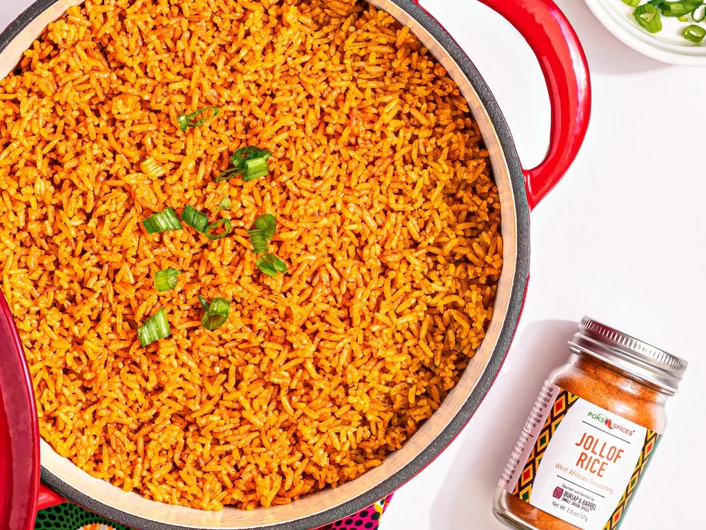

Jollof Rice

Jollof rice is a rice dish from West Africa. The dish is typically made with long-grain rice,
tomatoes, chilies, onions, spices, and sometimes other vegetables and/or meat in a single pot,
although its ingredients and preparation methods vary across different regions.
Ingredients
- Red bell pepper
- Tomatoes
- Red onoin
- Fresh ginger
- Garlic
- Scotch bonnet pepper
- Sunflower oil
- Rice
- Vegetable oil
- Bay leaf
Steps
- Pour warm or hot water over the rice to soak for about 30 minutes
- Wash and blend tomatoes, onions, pepper, garlic and ginger. then parboil till water dries out.
- Dice the remaining onion and set aside.
- Heat up pot amd add vegetable oil and then onions, saute for about a minute and add tomato paste.
- Add bay leaf to get the flavor infused into the oil, add the parboiled pepper mix and cook for about 7 to 8 minute.
- Add salt and seasoning cube once the paste is cooked through
- Finally add your rice and water, turn to mix everything together and cover pot with foil paper before closing the lid.
Reduce the flame and allow the low heat and steam cook your rice.
- Check once in a while to make sure you do not need extra water and taste so you can adjust the ingredients.
- Remove from heat and serve.